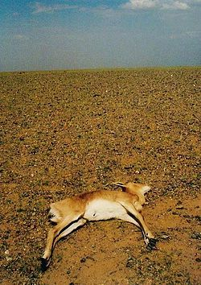

¿QUE ES SEQUÍA?
La sequía es una anomalía climatológica transitoria en la que la disponibilidad de agua se sitúa por debajo de lo habitual de un área geográfica. El agua no es suficiente para abastecer las necesidades de las plantas, los animales y los humanos que viven en dicho lugar.
La causa principal de toda sequía es la falta de lluvias o precipitaciones, este fenómeno se denomina sequía meteorológica y si perdura, deriva en una sequía hidrológica caracterizada por la desigualdad entre la disponibilidad natural de agua y las demandas naturales de agua. En casos extremos se puede llegar a la aridez.
Si el fenómeno está ligado al nivel de demanda de agua existente en la zona para uso humano e industrial hablamos de escasez de agua.
TIPOS DE SEQUÍA
- LA SEQUÍA METEOROLÓGICA
Se produce cuando ocurre un período prolongado con menos precipitación que la media. La sequía meteorológica suele preceder a las otras formas de sequía.
- LA SEQUÍA AGRÍCOLA
Es la que afecta a la producción de cultivos o la ecología del área biogeográfica. Esta condición también puede surgir independientemente de cualquier cambio en los niveles de precipitación, cuando las condiciones del suelo y la erosión provocada por actividades agrícolas mal planificadas causan un déficit en el agua disponible para los cultivos. Sin embargo, por lo general una sequía agrícola tradicional es causada por un período prolongado en la cual la precipitación cae debajo del promedio.
- NUNCA UTILICES EL INODORO COMO PAPELERA
Muchos de los residuos que suelen acabar en el retrete son contaminantes y peligrosos. Por ejemplo, las toallitas húmedas no consiguen degradarse antes de llegar a las depuradoras. Esto compromete gravemente el funcionamiento de las máquinas que, al final, tenemos que pagar con nuestros bolsillos. Otros como los medicamentos son altamente contaminantes, pueden integrarse en nuestros ecosistemas y alcanzar grandes concentraciones.
- LA SEQUÍA HIDROLÓGICA
Se produce cuando las reservas de agua disponibles en fuentes como acuíferos, ríos, lagos y presas caen por debajo de la media estadística. La sequía hidrológica tiende a aparecer más lentamente porque se trata de agua almacenada que se utiliza pero no se repone. Aunque una sequía hidrológica suele ser provocada por una precipitación deficiente, también pueden tener otras causas.
CONSECUENCIAS
Los períodos de sequía pueden tener importantes consecuencias para el ambiente, la agricultura, la economía, la salud y la sociedad. Los efectos varían dependiendo de la vulnerabilidad. Por ejemplo, los agricultores de subsistencia son más propensos a migrar durante una sequía, ya que no tienen fuentes alternativas de alimentos. Las áreas con poblaciones que dependen de la agricultura de subsistencia como fuente principal de alimento son más vulnerables a la hambruna. Entre 1970 y 2019, las sequías representaron el 15% de todas las catástrofes naturales, resultando en aproximadamente 650.000 víctimas mortales. Entre 1998 y 2017 generaron pérdidas económicas globales de alrededor de 124.000 millones de dólares. Desde el año 2000, se ha observado un aumento del 29% en la frecuencia y duración de las sequías. En 2022, más de 2.300 millones de personas se encontraban en situación de estrés hídrico, con cerca de 160 millones de niños expuestos a sequías graves y prolongadas.
- Disminución de la producción agrícola y de la capacidad de carga del ganado.
- Malnutrición, deshidratación y enfermedades relacionadas.
- Hambruna debido a la pérdida de los cultivos alimentarios.
- Migración masiva, resultando en un gran número de desplazados internos y refugiados.
- Daños al hábitat, afectando la vida silvestre en la ecorregión terrestre y acuática.[
- Tormentas de polvo, cuando la sequía afecta un área que sufre de desertificación y erosión
- Descontento social, conflictos y guerras por recursos naturales, incluyendo agua y alimentos.
- Interrupción de venta de alimentos en el mercado
- Aumento del riesgo de enfermedades y mortalidad.
